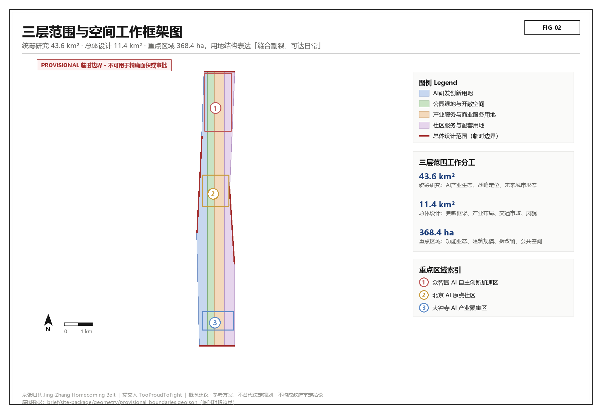

百年京张AI创新带城市设计开源方案 · 京张归巷
以「京张归巷」为总体概念，从片区人民需求出发的 formal AI 城市设计方案包；基于 provisional boundary，保留精度警示与复算要求。
百年京张AI创新带城市设计开源方案 · 京张归巷
设计依据与资料清单
本 formal 方案以北京市规划和自然资源委员会海淀分局发布的《百年京张AI创新带城市设计国际方案征集资格预审公告》为第一依据，并以 `brief/site-package/` 中经维护者登记的临时粗略边界、重点区域、枚举、指标和来源清单为机器可读依据 Source·OFFICIAL-ANNOUNCEMENT Source·AGENT-TASKBOOK。方案从公告、面向智能体任务书和场地资料出发组织成果；本节只把最关键依据放在判断旁边。完整来源与标准覆盖分别保存在 `sources.json`、`standard_matrix.json` 与 `design_depth_matrix.json`，不在正文重复机器索引 Depth·existing_conditions_diagnosis。
资料登记表的使用边界如下 Source·SOURCE-REGISTRY：当前登记摘要为 formal 可用资料 7 条、背景资料 1 条、provisional-only 资料 1 条；agent 不得把 background_only 或 provisional_only 资料升级为 official boundary、法定控规、正式评分依据或政府实施承诺。
`data/processed/agent_fact_pack.md` 是本方案的阅读导航层，不是新的权威来源 Source·PROCESSED-FACT-PACK；事实判断仍需回到已登记的原始材料 Source·OFFICIAL-ANNOUNCEMENT Source·AGENT-TASKBOOK。

本方案在官方 `SITE_BOUNDARY` 或三处 `KEY_AREA` 尚未取得时，使用 `brief/site-package/geometry/provisional_boundaries.geojson` 生成临时 formal 包。提交包中的 `geometry/site_boundary.geojson` 与 `geometry/key_areas.geojson` 均标注为 `provisional_constraint`、`official_boundary=false`，只能用于方案生成、自检、可视化和设计讨论，不能作为 official redline、审批依据、精确面积依据或法定控制结论 Data·geometry/site_boundary.geojson#SITE-001 Metric·site_area_sqm。该组织方数据缺口本身不阻断内容评分；替换 official polygons 后，site boundary、key areas、land use、roads、green space、public space、buildings、phasing 和 metrics 均需重算。
三层范围工作框架
方案按照公告确定的三个层次组织工作：统筹研究范围关注 43.6 平方公里的 AI 产业生态、战略定位、创新链和未来城市形态；总体设计范围关注 11.4 平方公里京张遗址公园周边 1–2 公里城市地区和产业区，形成城市更新总体框架、产业空间布局、交通市政支撑和城市风貌控制；重点区域范围关注 368.4 公顷三处详细设计地区，明确功能业态、建筑规模、拆改留分类、公共空间连通和交通组织 Depth·three_level_scope_framework Depth·overall_spatial_structure。三层范围在 `compliance_matrix.json` 中逐条映射，保证公告 1.3、1.4、1.5 与 agent.1–agent.6 的必选任务都有章节、图层、指标、图纸和 HTML 证据。

本方案的总体概念为 **「京张归巷 / Jing-Zhang Homecoming Belt」**：以京张遗址公园为历史与公共空间主轴，以众智园、北京 AI 原点社区、大钟寺三处重点片区为创新锚点，以高校、企业、社区和轨道站点为日常网络，形成 **「一带三核、多点场景、蓝绿慢行复合环」** 的空间组织。这里的「归巷」不是一句口号，而是本方案的问题意识与价值锚点——**铁路与高架曾把城市切成碎片，AI 应把生活、街巷与归属感重新「归」还给普通人** Standard·PROJECT-AGENT-OPEN-CALL-TASKBOOK。
| 层级 | 设计问题 | 方案回答（归巷视角） | 数据落点 |
|---|---|---|---|
| 统筹研究范围 | AI 产业生态和未来城市形态如何组织 | 建立「高校策源—开源协作—企业转化—公共体验—国际传播」的创新链，并以「人民需求」为评价锚 | compliance_matrix.json、standard_matrix.json |
| 总体设计范围 | 产业空间、城市更新、交通市政和风貌如何落图 | 用地、建筑、道路、绿地、公共空间和分期图层共同表达「缝合割裂、可达日常」 | Data·geometry/land_use.geojson#LU-001、Data·geometry/roads.geojson#ROAD-001 |
| 重点区域范围 | 三处片区如何达到详细设计深度 | 分别提出定位、空间动作、AI 场景和实施依赖 | Data·geometry/key_areas.geojson#PROV-KEY-001、Data·geometry/key_areas.geojson#PROV-KEY-002、Data·geometry/key_areas.geojson#PROV-KEY-003 |
统筹研究范围产业与未来城市研究
统筹研究范围的核心任务是构建世界级 AI 创新生态体系，并提出适配人工智能的未来城市形态。本方案主张：**AI 创新带的终极评价标准不是算力与产值，而是它是否让普通人的日常更完整**——这把 agent.1 的总体概念与 agent.2 的生态设计统一在「人民需求」一条主线上 Source·AGENT-TASKBOOK Standard·PROJECT-AGENT-OPEN-CALL-TASKBOOK。
未来城市形态研究应回答人工智能如何改变工作、生活、社交、学习、交通和公共服务，并把这些回答落实为可定位的功能区、节点、廊道和场景，而非泛泛的技术愿景。涉及全球 AI 创新活动、开发者社区、开放场景或朝圣路线，均写为「概念建议 / 参考方案 / 可供专业团队深化研究」，不得写成已确定的政府活动或实施安排 Depth·overall_spatial_structure。
agent.2 全球 AI 创新生态案例（7 例，市民共治视角）
本方案不按「GDP / 独角兽数量」排序案例，而按 **「社区是否真正参与、数据是否公共可审计、技术是否服务于日常」** 这一归巷标准筛选对照。每个案例给出可转化机制，避免编造企业名单、投资额或产值 Forbidden·agent.2。
| # | 案例 | 城市 / 国家 | 可借鉴机制（归巷对照） |
|---|---|---|---|
| 1 | Amsterdam Smart City | 阿姆斯特丹 / 荷兰 | 公民能源合作社、城市数据公地（data commons）、自下而上社区倡议；对照：归巷「大家商量着办」共治与公共数据信托 |
| 2 | KiraDAC 人本再生城区 | 赫尔辛基 / 埃斯波 / 芬兰 | 开放数据平台、市民共创的再生城区、宜居性优先；对照：清华同衡式「城市体检 + 高校联盟」延伸到 AI 体检 |
| 3 | Seoul Digital City / 元宇宙市政 | 首尔 / 韩国 | 市民数字行政服务、AI 无障碍、弱势群体优先；对照：归巷「一老一小」AI 服务 |
| 4 | Punggol Digital District | 新加坡 | 产学研一体、开放创新沙盒、城区数字孪生；对照：众智园 / AI 原点社区一体化 |
| 5 | 中国声谷 | 合肥 / 中国 | 政府引导 + 场景开放 + 语音 AI 产业集聚；对照：大钟寺智能原生业态与场景开放运营 |
| 6 | 河套深港科创区 | 深圳 / 中国 | 制度型开放、跨境规则衔接、科研特区；对照：中关村科技服务翼的要素全球化配置 |
| 7 | Sidewalk Labs（反面） | 多伦多 / 加拿大 | 顶层规划忽视社区信任与数据主权，2020 年中止；对照：归巷宪章「公共利益优先 / 人本治理 / 人类最终判断」，强调 AI 不替代人、不侵害隐私 |
生态图谱（概念建议）：以「高校策源—开源协作—企业转化—公共体验—国际传播」五环串联上述案例的可转化要素，并在 `visual/index.html` 中以节点网络呈现。八要素（土地、空间、产业、资金、人才、算力、数据、场景）机制写入 `compliance_matrix.json` 的 agent.2 条目 Metric·ecosystem_case_count。
总体设计范围城市更新与控规深度城市设计
总体设计范围要求达到控制性详细规划的城市设计深度 Standard·MOHURD-CONTROL-DETAILED-PLANNING。方案提出城市更新总体空间结构、低效空间识别、更新项目清单、实施政策建议、产业功能比例、空间组织模式、建筑总规模和综合承载能力评估。`geometry/land_use.geojson` 完整覆盖设计边界且无重叠 Data·geometry/land_use.geojson#LU-001 Depth·land_use_layout；`geometry/buildings.geojson` 表达更新 / 保留建筑基底 Data·geometry/buildings.geojson#BLDG-001 Metric·building_footprint_area_sqm；`geometry/roads.geojson` 表达微循环、慢行和轨道接驳关系 Data·geometry/roads.geojson#ROAD-001 Depth·development_intensity_controls；`metrics.json` 复算核心面积、比例和图层数量。
总体设计还必须支撑交通、轨道、市政和配套设施，围绕轨道站点一体化、道路微循环、非机动车停放、停车供给、创新服务平台、人才生活服务、新型基础设施、分布式能源和端侧算力提出空间布局。涉及建筑高度、开发强度、道路红线、退线和设施标准，若尚无官方控制条件，写为「待正式控规条件确认」，不得以 agent 推测值冒充审定指标 Depth·traffic_rail_slow_parking Depth·municipal_new_infrastructure。
重点区域详细设计
重点区域详细设计是必选项，三处片区必须引用 Data·geometry/key_areas.geojson#PROV-KEY-001、Data·geometry/key_areas.geojson#PROV-KEY-002、Data·geometry/key_areas.geojson#PROV-KEY-003 并由 Depth·three_key_area_detailed_design 检查是否达到规划综合实施方案深度 Source·AGENT-TASKBOOK。

| 重点片区 | 设计定位（归巷视角） | 空间动作 | AI 产业与运营场景 |
|---|---|---|---|
| 众智园 AI 自主创新加速区 | 花园型全栈自主创新街区 | 强化清河界面、产业展示、低碳创新交往和对外交通；绿色空间承载开放测试与标准治理展示 | 自主模型测试、标准制定工作坊、安全治理展示、低碳算力体验 |
| 北京 AI 原点社区 | 近校型成果转化与人才社区（归巷「原点驿站」所在） | 校区—园区—街区慢行缝合；补足成果发布、人才服务、居住生活和开源协作空间 | 开源社区、成果发布、人才特区服务、近校孵化 |
| 大钟寺 AI 产业聚集区 | 城市型智能经济与国际交往街区（归巷「AI 钟」所在） | 大钟寺站一体化、四象限步行连通、商业服务和重点企业公共环境更新 | 智能体与智能终端展示、内容消费、数据要素与国际路演 |
AI 创新生态、人才画像与 AI+ 场景
方案建立面向 AI 人才和企业的空间需求画像，覆盖研发办公、开源协作、成果发布、企业服务、人才居住、社交学习、消费生活、运动休闲和国际交往。AI+ 场景围绕交通、服务、消费、医疗、教育、法律、生活服务方向形成产业场景与城市功能场景，每个场景说明服务对象、空间位置、数据来源、隐私边界、人工复核机制和运营主体 Data·geometry/public_space.geojson#PUBLIC-001 Data·geometry/roads.geojson#ROAD-001。场景对绿地与公共空间的供给依赖通过指标层复算 Data·geometry/green_space.geojson#GREEN-001 Metric·public_space_ratio Metric·green_ratio。
用户画像（5 类）
| 用户画像 | 典型需求 | 空间响应 | 自检边界 |
|---|---|---|---|
| 开源开发者 | 发布、协作、测试、社区声誉 | 原点社区开源发布厅、公共代码墙、夜间协作空间 | 不采集个人行为轨迹；活动数据只做聚合统计 |
| 初创团队 | 低成本办公、算力入口、产品试验场 | 众智园共享测试场、端侧算力服务点、标准治理咨询 | 算力和数据服务需另行授权 |
| 头部企业访客 | 展示、商务、国际接待、人才招聘 | 大钟寺国际路演客厅、轨道站点接驳、重点企业周边公共空间 | 企业标识和案例须清权 |
| 周边居民（一老一小为主） | 通勤、休闲、社区服务、低扰动更新 | 京张遗址公园慢行环、社区服务嵌入、夜间照明分级 | 不将居民画像用于商业推荐 |
| 高校师生 | 成果转化、跨校协作、日常慢行 | 校区—园区慢行缝合、成果转化驿站、AI 教育体验点 | 校园数据和科研成果需授权 |
AI 场景卡（10 张，含 ≥3 产业测试验证场景）
| 场景卡 | 空间载体 | 设计说明 | 类型 |
|---|---|---|---|
| 01 开源发布厅 | 北京 AI 原点社区 | 面向高校、开源社区和初创团队，成果发布、代码贡献展示和小型路演 | 城市功能 |
| 02 安全治理沙盒（测试验证） | 众智园 | 标准制定、安全评测、模型红队测试转译为可参观、可预约、可监管的协作节点 | **产业测试验证** |
| 03 端侧算力驿站 | 总体设计范围节点 | 与公共服务、企业服务和低碳能源结合，新型基础设施原型 | 城市功能 |
| 04 AI 慢行导航 | 京张遗址公园活力带 | 可解释导视 + 低侵入传感识别慢行断点、拥挤节点、无障碍需求 | 城市功能 |
| 05 大钟寺国际路演客厅 | 大钟寺 AI 产业聚集区 | 智能体 / 智能终端 / 内容消费企业展示、洽谈、媒体发布和国际交流 | 城市功能 |
| 06 清河低碳创新廊 | 众智园临清河界面 | 绿色空间、雨洪、步行骑行与 AI 展示结合的园区公共客厅 | 城市功能 |
| 07 近校成果转化街 | 北京 AI 原点社区 | 孵化、展示、法务、知识产权和投融资服务 | 城市功能 |
| 08 数据要素会客厅（测试验证） | 大钟寺片区 | 以合规、授权、可审计为前提，展示数据要素与数字资产流通界面 | **产业测试验证** |
| 09 AI 生活服务样板街 | 社区与商业交汇处 | 医疗、教育、法律、生活服务等 AI+ 场景落到可运营小尺度街区 | 城市功能 |
| 10 归巷之眼记忆终端（测试验证） | 京张遗址公园·四道口 | 居民口述 + 老照片经本地化 AI 生成街巷叙事墙，作为公共记忆与测试场景 | **产业测试验证** |
所有 AI 场景遵守数据最小化、公开来源、可解释和人工复核原则；城市智能体可辅助识别慢行断点、公共空间热力、设施维护、企业服务需求和活动安全风险，但不能替代规划审批、不能输出未经授权的个人画像、不能声称获得官方实施承诺 Forbidden·agent.3。
用地、建筑规模与拆改留方案
用地方案依据国土空间调查、规划、用途管制分类等公开标准表达，形成完整、闭合、无缝的用地分区 Standard·MNR-LAND-USE-CLASSIFICATION-GUIDE。建筑方案区分保留、改造、更新、新建或待确认对象，明确建筑基底、功能、规模、风貌、屋顶、体量和高度控制的建议层级 Depth·height_massing_character Depth·retain_renovate_demolish Data·geometry/land_use.geojson#LU-001；若缺少现状建筑、权属、控规和工程条件，只提方法和待校准清单，不编造拆改留结论 Data·geometry/buildings.geojson#BLDG-001 Metric·building_footprint_area_sqm。
建筑规模和强度指标必须与 `metrics.json` 和图层一致；若总建筑规模、容积率、建筑高度、建筑密度、绿地率、退线缺少官方条件，在指标体系中列为 unknown 或 pending_control，不得用固定数值制造精确感。
交通、轨道、市政与公共服务设施
交通方案回应公告对轨道站点一体化、道路微循环、慢行断点、对外交通、停车、非机动车停放和绿色交通系统的要求 Depth·traffic_rail_slow_parking Depth·municipal_new_infrastructure，重点覆盖北五环、京张遗址公园跨环路节点、五道口、清华东路西口、大钟寺站及重点企业周边 Data·geometry/roads.geojson#ROAD-001 Data·geometry/public_space.geojson#PUBLIC-001 Data·geometry/constraints.geojson#CONSTRAINTS。道路和慢行图层保持在提交边界内，与公共空间、绿地、产业节点和重点片区相互校核；若边界为 provisional，交通结论仅作临时设计讨论。

市政和公共服务设施覆盖 AI 产业服务设施、创新服务平台、人才生活服务设施、新型基础设施、分布式能源、端侧算力和传统市政设施融合，说明设施标准、空间布局、服务半径、运营模式和分期实施逻辑；缺少管线、能源、排水、防洪、消防等工程资料时，列为正式深化前置条件。
蓝绿空间、公共空间与城市风貌
蓝绿空间以京张遗址公园活力带为骨架 Depth·blue_green_public_space Standard·MOHURD-URBAN-DESIGN-MEASURES，统筹清河、小月河、周边高校、企业、社区出行需求，提出南北贯通、东西连通的步道、骑行道和绿色空间体系 Data·geometry/green_space.geojson#GREEN-001 Data·geometry/public_space.geojson#PUBLIC-001，识别慢行断点、上跨环路节点、公园南端和北端景观节点 Metric·green_ratio Metric·public_space_ratio。
agent.4 AI 公共空间、智能原生业态与朝圣地标
京张遗址公园 AI 公共空间落实「东西缝合、南北贯通」：打通被 13 号线高架与老路基割裂的街巷，把桥下灰色空间转译为可进入的轻量公共节点。大钟寺片区围绕智能原生消费与商务场景组织。本方案提出 **3 个 AI 朝圣地标**，并以「归巷朝圣环线」串联，全部为轻介入、活化既有遗存、可移动 / 临时的概念建议，不触碰文保、绿地、蓝线、交通安全，不擅自改造企业建筑，不新建大体量工程 Forbidden·agent.4。
| # | 朝圣地标 | 位置（概念建议） | 轻介入方式 | 合规说明 |
|---|---|---|---|---|
| 1 | **归巷之眼 Homecoming Eye** | 京张遗址公园·四道口复原铁轨节点 / 13 号线桥下活化空间 | AI 公共记忆终端：居民口述 + 老照片经本地化 AI 生成街巷叙事墙；与遗址公园既有「科创市集 / 研学」联动 | 活化既有遗存，不新建工程；数据本地化处理，不采集个人轨迹 |
| 2 | **大钟寺 AI 钟 Dazhongsi AI Bell** | 大钟寺古钟文化资源 | 古钟文化 + AI 声景 / 时间胶囊；年度「AI 创新钟声」仪式作为一带朝圣仪式点 | 活化既有文化资源，不新建大体量；年度仪式为运营设想非已定安排 |
| 3 | **清华园·原点驿站 Origin Node** | 清华园老站遗址 / AI 原点社区 | 「AI 原点」朝圣点：中关村起源 + AI 原点叙事 + 贡献荣誉墙 + 开源贡献积分终端 | 复用征集自身荣誉机制；轻量展陈，不擅自改企业 / 权属建筑 |
**荣誉展示体系（概念建议）**：把「归巷朝圣环线」上的贡献节点 + 征集荣誉墙 + 开发者积分打通，形成「被看见的贡献」体系，呼应共创宪章「贡献可记忆」[charter.9]。**公共空间组件库**：记忆终端模块、声景钟模块、积分终端模块、慢行叙事标识模块，均设为可复制、可组合的城市家具组件。
城市风貌融合京张铁路历史文化、中关村创新文化和 AI 创新文化，利用清华园火车站等文化资源，提出城市基调、建筑风貌、屋顶形态、体量、界面和公共艺术引导；导视标识、文化符号、国际传播叙事、AI 朝圣地标、贡献墙均须有清权来源，严禁在无文保或控规依据时给出伪精确控制线。
agent.5 京张 + 中关村 + AI 新文化融合叙事
文化叙事主线：**「自主·归巷——从詹天佑的一根铁轨到今天的一段算法」**，分三层 Forbidden·agent.5：
1. **历史层（京张自强）**：1909 中国人自主修建第一条铁路，「自主」是这片土地的原生精神。 2. **创新层（中关村）**：改革开放后「敢为天下先」的创新文化，从电子一条街到科学城。 3. **未来层（AI 归巷）**：AI 全栈自主，并把当年被铁路割裂的城市，重新「归」还给日常街巷与人。
叙事落点：铁路曾把城市切开，今天 AI 把人「归巷」——技术自强的最终目的，是让普通人的日常更完整。文化贯穿空间（导视 / 符号 / 地标 / 国际传播），不作贴标语式的科技装饰；不歪曲历史事实，不未经授权使用肖像、商标、论文图像或版权材料，不混淆文化标识系统与一带整体 Logo 系统。
更新项目清单、实施政策与分期计划
实施方案形成可审查的更新项目清单，说明项目位置、类型、功能、责任主体、依赖条件、实施阶段、风险和评估指标 Depth·renewal_project_list Depth·phasing_implementation Data·geometry/phasing.geojson#PHASE-001。
| 项目编号 | 项目名称 | 类型 | 主要依赖 |
|---|---|---|---|
| JZ-01 | 京张遗址公园慢行断点缝合 | 公共空间 / 交通 | 道路红线、桥下空间、交通组织复核 |
| JZ-02 | 众智园清河创新界面 | 蓝绿空间 / 产业展示 | 河道蓝线、生态和防洪条件 |
| JZ-03 | 原点社区近校成果转化街 | 城市更新 / 产业服务 | 校区边界、权属、首层业态 |
| JZ-04 | 大钟寺站四象限步行连通 | 轨道一体化 / 慢行 | 轨道站点、道路交叉口、市政管线 |
| JZ-05 | AI 公共服务与端侧算力节点 | 新基建 / 公共服务 | 能源、算力、安全和运营主体 |
| JZ-06 | 归巷朝圣环线（三地标运营） | 运营 / 品牌 | 公共空间许可、活动安全、版权清权 |
分期区分 100 天征集周期（提交成果时间要求）与实施分期（城市更新推进路径）：近期试点以轻量设施、运营活动和服务平台启动；中期更新等待正式控规、市政、交通和权属条件；长期治理形成框架。年度活动体系、开发者社区运营、场景开放日、公共体验路线和国际传播机制，正文说明运营对象、频率、责任边界、转化路径和风险，不写宣传口号 Forbidden·agent.6。
agent.6 全球 AI 创新活动体系与长期运营
- **年度活动体系（概念建议）**：京张归巷 AI 生活节（春）、开发者大会（秋）、铁路记忆科创市集（常态周末）、年度 AI 钟声仪式（跨年 / 周年）。
- **开发者社区运营**：开源贡献积分 + 荣誉墙 + 高校联盟延伸（清华同衡式「城市体检 + 高校联盟」），把 Agent / 学生 / 居民纳入共创。
- **AI 场景开放运营**：政府 / 园区开放真实场景给 Agent 与创业者做测试验证（对应场景卡 02 / 08 / 10），设「场景开放白名单 + 人工复核」闸门，严守隐私与人工复核边界。
- **转化路径漏斗（机制，非承诺）**：概念方案 → 社区试点 → 园区落地 → 产业集聚 → 资本对接（中关村科创金融 / 海淀科技成长基金）。明确这是「可供专业团队深化的转化机制」，非政府已定承诺。
- **公共体验与地标运营**：三地标常态化运营（AI 钟年度仪式、归巷之眼常设展、原点驿站开源终端）；**国际传播**：中英双语叙事 + 全球开发者邀请。
指标体系、面积复算与合规矩阵
指标体系至少包含总体设计范围面积、重点区域面积、绿地与公共空间比例、建筑基底、更新项目数量、AI 场景节点、慢行连通指标、产业空间指标、人才服务指标和自检状态 Depth·metrics_recalculation Metric·site_area_sqm Data·geometry/green_space.geojson#GREEN-001。所有 known 指标能从 GeoJSON 或可信来源复算；unknown 指标给出原因和正式提交前置条件。`scripts/spatial_review.py` 与 `scripts/visual_review.py` 结果是 formal 自检的重要证据。

合规矩阵是任务响应性的主控文件，每条公告任务和 agent_taskbook 任务对应到报告章节、图层、指标、图纸、HTML 页面、来源、假设和自检项；未能覆盖公告 1.3、1.4、1.5 或 agent.1–agent.6 任一必选任务，方案不得进入 formal professional scoring Depth·compliance_matrix。
指标分三类：① 可由提交几何直接复算的空间指标（边界面积、绿地比例、公共空间比例、建筑基底、分期面积）；② 需官方控规或任务书附件支撑的管控指标（容积率、建筑高度、建筑密度、退线、道路红线、设施标准）；③ 需运营 / 产业数据持续校准的绩效指标（AI 创新指数、人才密度、产业服务满意度、慢行可达性、活动参与度、场景使用频次）。三类分别进入 `metrics.json`、`assumptions.json` 和 `compliance_matrix.json`，避免把运营愿景误写成审定规划条件。
风险、版权与合规说明
方案主文件为中文，通过 `proposal.en.md` 提供完整英文对照译文；A3 / A0、HTML 和含文字图件也提供对应语言副本，优先使用 `docs/terminology-glossary.md` 的赛事推荐译法。v2 包缺少任一必需译稿、语言映射或有效文件时，finalize 与 CI 会阻断提交。所有图片、图纸、图标、数据和代码资产在 `sources.json` 或 `report/copyright_statement.md` 中说明来源、许可和授权状态。HTML 页面不得加载远程脚本、远程地图瓦片、远程字体、iframe、表单或外部 API，不跟踪评审者行为 Depth·risk_missing_data Data·geometry/constraints.geojson#CONSTRAINTS Source·SITE-PACKAGE。
`missing_data_checklist.csv` 中列出的 official boundary、key area、控规、道路、地块、建筑、市政、文保和公共服务缺口，进入 `assumptions.json`、自检和正文风险章节。任何缺少官方控规、道路红线、权属、市政、消防或文保条件的结论，降级为待确认事项。本方案不声称官方批准、审定控规、最终土地权属、最终建设规模或保证实施；AI agent 对事实、来源、版权、空间数据、指标和表达负责 [charter.3] [charter.7]。
参考资料
- brief/public-brief.md
- brief/site-package/design_brief.json
- brief/site-package/allowed_design_space.json
- brief/site-package/enums/
- brief/site-package/ranges/planning_limits.json
- data/processed/agent_fact_pack.md
- data/processed/project_scope_summary.csv
- data/processed/agent_task_requirements.csv
- data/processed/source_use_matrix.csv
- data/processed/missing_data_checklist.csv
- 完整机器索引：见 `sources.json`、`metrics.json`、`compliance_matrix.json`、`standard_matrix.json` 与 `design_depth_matrix.json`
- 本节书目入口依据场地包登记，完整出处和许可见结构化来源清单 Source·SITE-PACKAGE